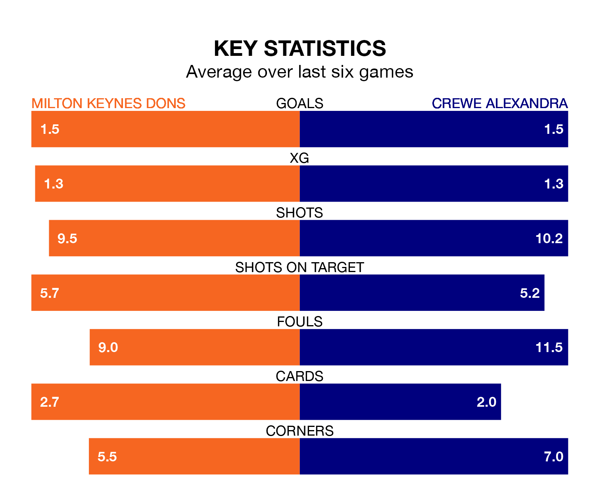

Milton Keynes Dons host Crewe Alexandra on Saturday at Stadium mk in EFL League Two.
In their last league match, on Tuesday, Milton Keynes lost to Grimsby Town 1-0 away.
Crewe won, 1-0 at home against Sutton United, with Elliot Nevitt scoring their goals.
With 65 goals in 37 games so far this season, Crewe are scoring more than average in the league with 1.8 goals per game. And they are conceding fewer than average, letting in 51 goals at a rate of 1.4 per game.
Milton Keynes are also above average scorers, with 1.6 goals per game, compared to a league average of 1.5. They have conceded 1.3 goals per game.
In the last 10 years, Milton Keynes and Crewe have played each other on nine occasions. They won four each, and they drew once.
On average, the Dons scored 2.0 goals and the Railwaymen 1.2 in those matches.
Their last meeting was on September 2, when Crewe won 3-1 at home.
The Railwaymen are fourth in the table after 37 games, of which they have won 18 and drawn 10, earning 64 points.
Dons are one place behind the away team in fifth, with 19 wins and seven draws putting them on the same number of points.
The Dons are in mixed form in EFL League Two, with three wins and a draw from their last six games.
And also with three wins and a draw over that period, Crewe's form is identical – they have both taken 10 points from 18.
Saturday's match will be refereed by Paul Howard, who has taken charge of 12 EFL League Two games so far this season, issuing one red card and booking 33 players. He has awarded one penalty.
The last Crewe game Howard refereed was the 3-3 draw at home against Accrington Stanley on December 16. He is yet to oversee a match featuring Milton Keynes this season.
Updated: 15:10 (UTC), 15/03/24